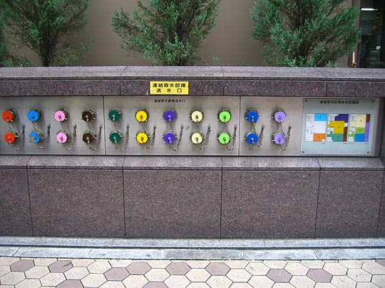
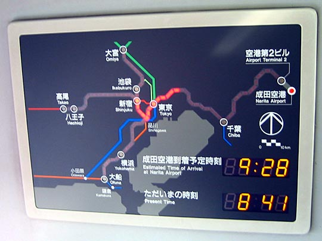

All over the city you see gleaming copper fire hydrants set into the walls. Don't recall seeing anything similar in the UK so I'm wondering whether it's something to do with stricter fire-control legislation because of earthquakes. This block in Asakusa had these beautiful hydrants outside obviously colour-coded to specific parts of the block.
Progress indicator on the Narita (airport) Express train. LEDs light to show your country progress. Estimated time of arrival and the present time is shown.
Screens inside the Yamanote Line carriages. Many of the other JR lines and subway lines have similar screens. In between stations they show ads and news headlines, but before arriving at stations they show useful information that London Underground could take some hints from. (The electronic display boards on the Piccadilly Line are a joke.)
[That said, I still think London Underground has some of the best information design in the world. In one respect it is vastly superior to Tokyo's: it has a single unified design language to describe its map and lines. In Tokyo, you can see dozens of versions of the same map, one of which may put two stations horizontally adjacent while the other puts them vertically adjacent. These electronic graphics bear no resemblance to graphics on the platforms either.]
The captions alternate between English and Japanese in all these signs. This one shows the whole route, and time durations
This one shows interchanges at the next station
Facilities on the platform relative to train coaches. (The position of the coach doors are also indicated on the platforms, and people waiting for trains voluntarily form themselves into queues at those points. They even do so at bus stops.)
I just liked the icons.
This is a different train, but the screens show the week's weather too.
Busy intersection near our hotel. The electronic signboard in the middle show exit numbers, and congestion level at each area.
Near our hotel, we were struck by this office block that made the most of its nearly non-existant sidewalk space to have a vertical moss garden
Instead of gutters, all these traditional buildings and shrines have rain-chains. Changes something utilitarian into something beautiful, to the eyes and ears. Kamakura.


Restaurant layouts: eat at counters arranged around the kitchen. The kitchen staff are also the bar staff and waiters. Makes the most of limited space (we've seen versions only about 2x3 meters, seating about 3 people), and makes for a fun, interesting atmosphere.
Plug extension in the shape of a fishbone
Toilet/washbasin combination. You wash your hands in the water refilling the tank. Why isn't this a worldwide standard?
More clever use of minimal space. The design enables the bath and the basin to be filled from the same taps and faucet.
Classics of world animation, photographed in Tower Records. This is mostly to remind myself of what I still need to look for -- when things like this finally become available in English. None of these had English subtitles.
OK, I don't have anything for this section except these wow-how-futuristic monorail lines we saw on the way to Narita. I wasn't quick enough to photograph one of the actual trains, but they hang from underneath those tracks.